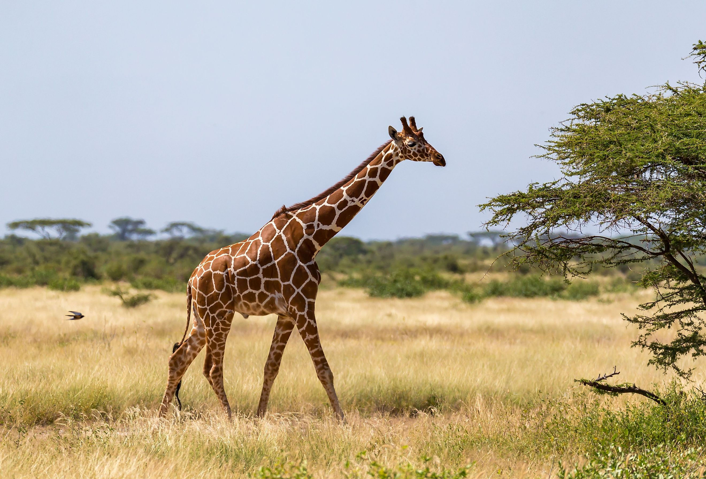

Herein, this page is to detail the animals in this zoo and to provide sources on how to care for them.
Ollie and Mona are our fiesty bears, who display a playful show all the time! Watch them as they jump around for salmon! For more information about bears and how to care for them, check the link here: Bears

Frankie and Coconut are suave, swanky, and cool-cat giraffes, who keep a low profile inspite of their lanky stature. For more information about giraffes and how to care for them, check the link here: Giraffes
Mella and Karl are the lazy cats in our zoo. They lounge around like there's a 24/7 Schitts Creek marathon going on. For more information about lions and how to care for them, check the link here: Lions

Monkey see, monkey do, monkey who? That's right! we got Cookie, Earl, and Banana Pudding, our 3 scandalous monkeys all wrapped up in a love triangle. They're always fighting about who gets who! For more information about monkeys and how to care for them, checkout the link here: Monkeys

Rawr! says the alligator. Wren, Aspen and Mika don't play. Unless you wanna become their prey! Otherwise they're basking in the sun, island time chilling. For more information about alligators and how to care for them, check out the link here: Alligators